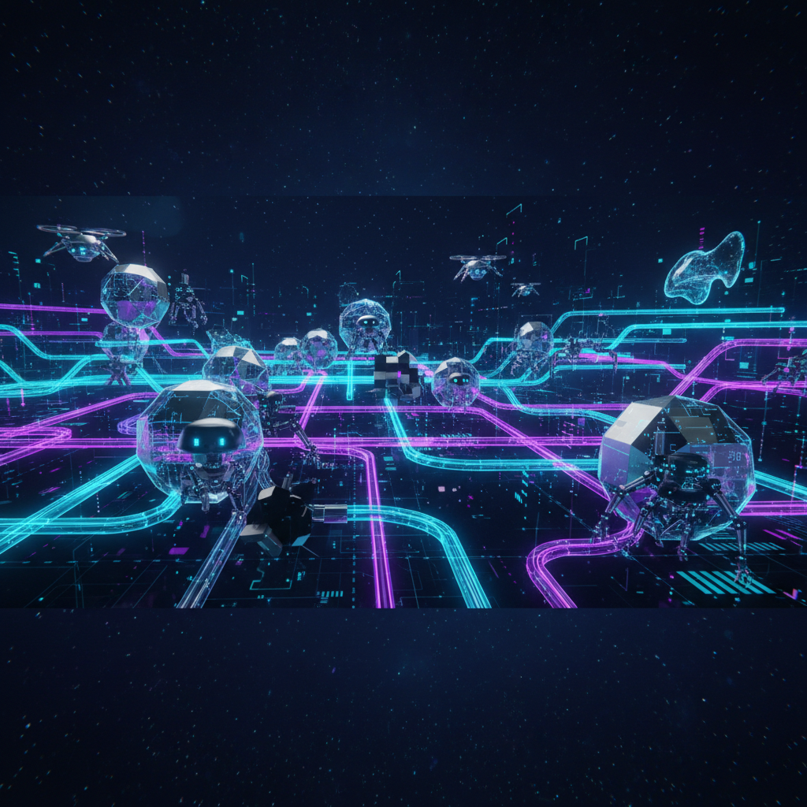
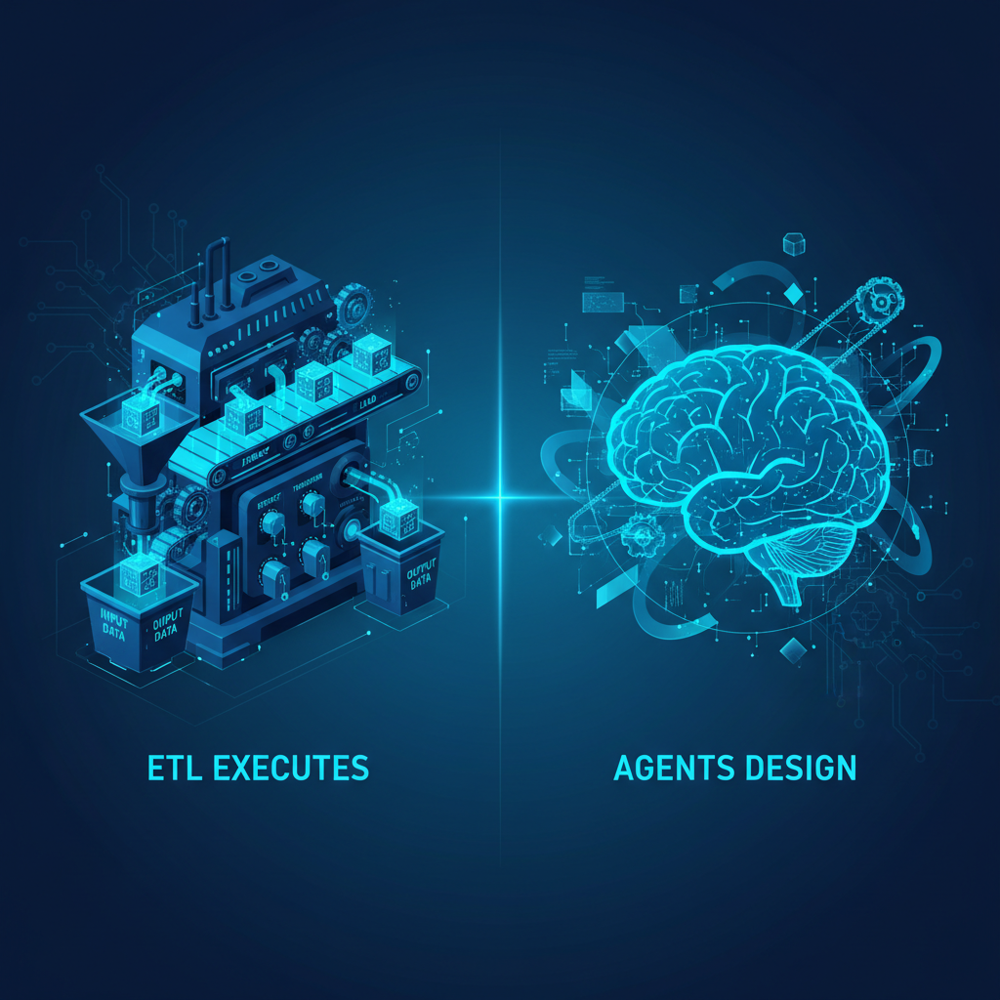
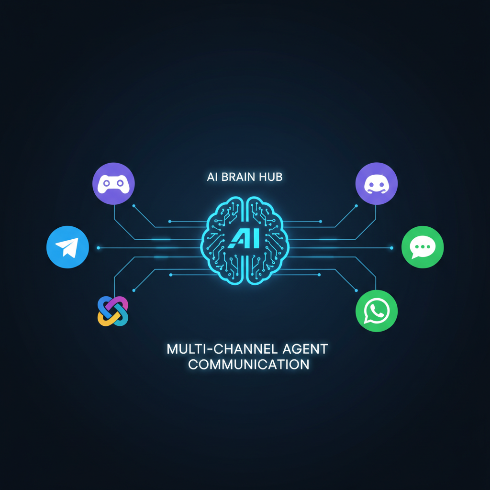

PawFlow combines multi-provider AI agents, shared conversations, desktop tools, multimodal generation, and deterministic flows that can keep running after the chat ends.
Pure chat agents are great at exploration, but fragile for recurring operations. A 7 AM digest, webhook, or data sync should not depend on a fresh model decision at every run unless you explicitly want that behavior.
PawFlow separates conception from execution. The AI agent has its creative moment when it generates the flow. Once deployed, the flow runs as deterministic, structured JSON — no LLM in the loop. Same input, same output, every time.
A self-hosted runtime for agentic coding, desktop automation, multimodal tools, and repeatable flows.
Describe what you need in natural language. The AI agent generates a complete, deployable pipeline — cron triggers, data fetching, LLM processing, email delivery. All as structured JSON, ready to run forever.
From Kafka to S3, MQTT to SQL, CSV to Parquet — a full ETL toolkit. Plus HTTP listeners, webhooks, rate control, deduplication, and merge/split/routing.
Spawn agents, assign tasks, verify results. Agents can collaborate, delegate, and escalate — each with its own LLM, tools, and permissions.
Per-tool allow/deny/confirm controls. Encrypted secrets. OAuth2 built-in. Checkpoints with /rewind. You control what agents can do.
Agents remember across sessions with semantic search. Not just keyword matching — actual meaning-based recall that improves over time.
Generate images, video, audio, voice, 3D assets, try-on outputs, lipsync clips, and upscaled images directly from agent conversations and flows.
Structured plans with approval gates. Assignable tasks with verification. Agents don't just talk — they execute and report.
Agents can explore, build, and delegate; flows handle the repeatable parts with explicit structure.
❌ Non-deterministic. The agent is in the execution loop. It might decide not to send. It might hallucinate. Different result every run.
✅ Deterministic. The agent designed it once. The ETL runs it forever. Same input → same output.

You choose exactly how much AI you want at each step:
inferLLM tasks.publishMessage + readConversation.And the ETL can call agents, publish to conversations, and even participate in them. It's not a wall between two worlds — it's a bridge you control.
Connect via the channels your team already uses.

A real flow generated by an agent — daily crypto digest with LLM analysis, sent via OAuth2 email.
{
"id": "daily-crypto-email-oauth2",
"tasks": {
"trigger": { "type": "cronTrigger", "parameters": { "schedule": "0 7 * * *" } },
"fetch_crypto": { "type": "executeScript", // Fetch CoinGecko API },
"prepare_llm_input": { "type": "executeScript", // Format prompt },
"generate_summary": { "type": "inferLLM", // AI analysis },
"merge_parts": { "type": "mergeContent" // Combine data + summary },
"compose_email": { "type": "executeScript", // Build email body },
"send_email": { "type": "sendEmail", "parameters": { "auth_type": "oauth2" } }
},
"relations": [
{ "from": "trigger", "to": "fetch_crypto" },
{ "from": "fetch_crypto", "to": "prepare_llm_input" },
{ "from": "prepare_llm_input", "to": "generate_summary" },
{ "from": "generate_summary", "to": "merge_parts" },
{ "from": "merge_parts", "to": "compose_email" },
{ "from": "compose_email", "to": "send_email" }
]
}An agent generated this flow from: "Send me a daily crypto digest email at 7 AM with AI analysis."
It runs every day. Deterministically. The agent is no longer in the loop.
Run agents through API providers or provider CLIs, with model selection per agent or conversation.